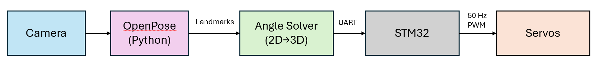

Robo Arm Mimic
Project Overview
This project is a 4-degree-of-freedom (DOF) serial robotic arm designed to mimic the movements of a human arm in real-time. A 3-DOF gimbal models the shoulder's motion, complemented by a 1-DOF elbow joint.
A computer vision pipeline using Google's MediaPipe model tracks the user's shoulder, elbow, and wrist. A custom kinematic model converts these 2D joint positions into robust 3D target angles. These angles are then sent from the laptop to an STM32 microcontroller, which controls the robot arm's servos to replicate the motion.
System Pipeline (Calibration → Tracking)
Mechanical Design (SolidWorks)
The entire arm and gimbal assembly were custom-designed in SolidWorks. The components are 3D-printed and incorporate bearings at key joints to ensure smooth, low-friction movement.
Servos were selected based on performance requirements: high-torque MG996R servos are used for the shoulder gimbal, which handles the largest loads, while lightweight, metal-geared SG90 servos are used for the elbow and end-effector.

Electronics & PCB Design (KiCad)
To safely handle the high current demands of four servos, a custom PCB was designed in KiCad. The MG996R servos can draw several amps under load, and the entire system is powered by a 5V / 8A supply.
The PCB features a high-current screw terminal for power input and robust, wide traces for power delivery to the servo headers. This custom board prevents the STM32 from browning out and provides a clean, reliable integration point for all hardware.
System Block Diagram
Kinematic Model: 2D Vision to 3D Angles
The core challenge is converting the 2D pixel coordinates (x, y) from MediaPipe into the four 3D angles required to control the robot (3-DOF shoulder, 1-DOF elbow). This is solved with a kinematic model that runs in real-time.
Elbow Flexion
The elbow's flexion angle is the easiest to find. It's calculated as the 2D angle between the upper arm vector (shoulder-to-elbow) and the forearm vector (elbow-to-wrist) using a simple dot product.
Shoulder Angles (Pitch, Yaw, and Roll)
The 3-DOF shoulder is more complex. The Pitch (thetay, rotation around Y-axis) and Yaw (thetaz, rotation around Z-axis) are calculated by comparing the 2D (x, y) distances between the shoulder and elbow to the arm's *true* 3D length (l1), which is known from the scaling calibration.
θz = arcsin( (ay - by) / L1 )
θy = arccos( (ax - bx) / L1 )
The "Roll" Angle (thetax)
The most difficult angle to find is the shoulder's "roll" (thetax, rotation around the X-axis) because it describes the *twist* of the arm, which is not directly visible in 2D. This is solved with a clever 4-step process:
- "Un-yaw" the Forearm: The 2D forearm vector (
bc) is digitally rotated by-thetaz. This brings it back to a flat plane, as if the shoulder had no yaw. - Calculate Expected Height: We calculate the *expected* 2D-projected height of the wrist in this flat plane, assuming there was zero roll. This "no-roll" height is calculated as:
L2 * sin(elbow). - Find Actual Height: We take the *actual* Y-value of the "un-yawed" forearm vector from step 1.
- Compare & Solve: The roll angle
thetaxis the difference between the actual and expected heights. It's thearccosof the ratio between them.
hactual = (Un-yawed bc vector)y
hexpected = L2 * sin(elbow)
θx = arccos( hactual / hexpected )
Key Code Snippet
This logic is implemented in the main angle calculation function, which takes the MediaPipe landmarks (a, b, c) and the true arm lengths (l1, l2) to solve for all four angles.
def calculate_angle(shoulder_lm, elbow_lm, wrist_lm,
ab_ref, bc_ref, degrees=True):
# a, b, c are 2D points (x,y)
a = np.array([shoulder_lm.x, shoulder_lm.y])
b = np.array([elbow_lm.x, elbow_lm.y ])
c = np.array([wrist_lm.x, wrist_lm.y ])
# ab and bc are 2D vectors
ab = _vec(a, b)
bc = _vec(b, c)
# l1 and l2 are the TRUE 3D lengths
l1 = np.linalg.norm(ab_ref)
l2 = np.linalg.norm(bc_ref)
# 1. Elbow Flexion (dot product)
elbow = _angle_between(-ab, bc)
# 2. Shoulder Yaw (based on Y-distance)
shoulder_rot_z = np.arcsin((a[1] - b[1]) / l1)
# 3. Shoulder Pitch (based on X-distance)
if a[0] - b[0] > l1:
shoulder_rot_y = 0
else:
shoulder_rot_y = np.arccos((a[0] - b[0]) / l1)
# 4. Shoulder Roll (the complex part)
# "Un-yaw" the forearm vector
bc_rot = -rotate_2d_z(bc, -shoulder_rot_z)
# Calculate the expected "no-roll" height
yc_yb_real = l2 * np.sin(elbow)
# Find the ratio to solve for the roll angle
if bc_rot[1] > yc_yb_real:
shoulder_rot_x = 0
else:
shoulder_rot_x = np.arccos(bc_rot[1] / yc_yb_real)
return shoulder_rot_z, shoulder_rot_y, shoulder_rot_x, elbow
Embedded Control (In Progress)
The final link in the chain is an STM32 microcontroller. Its role is to receive the target angle data from the Python script via UART. The firmware (in development) will be responsible for generating the precise 50Hz (20ms) PWM signals required to drive each servo to its commanded position, bringing the robotic arm to life.